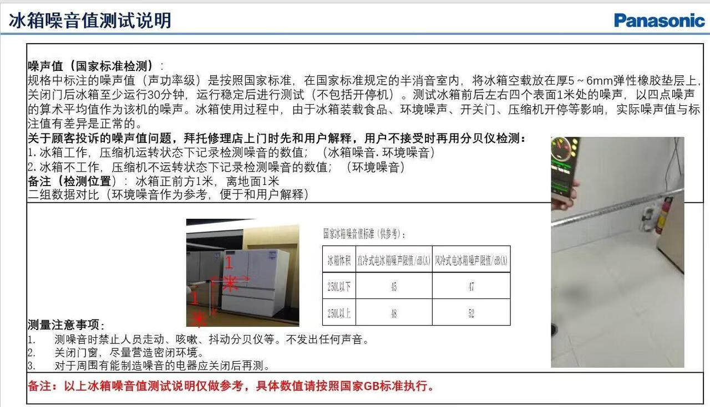

一些 PDF
最近整理一些工具的用法, 分别是:
- tmux 使用笔记
- Linux/Unix 常用命令 持续更新
松下冰箱维权记录
2023/01/04 在某东买了一台松下冰箱, 型号为: NR-NB57WPA-T, 噪音冰箱偏大, 在此记录一下漫漫维权路.
在开始之前, 让我们先理清楚维权过程中出现的各个角色:
- 某东, 中国头部电商企业, 我购买冰箱的平台, 有不作为的嫌疑
- 京东松下官方旗舰店, 松下在京东的门面, 代表松下销售和售后
- 苏州兴隆裕商贸有限公司, 不确定和松下的关系, 但承接京东松下官方旗舰店派单任务, 比如上门检测和维修
- 松下官方售后, 通过 4008111315 联系, 貌似工作人员都在杭州
沟通记录
2 月 18 号 第一次报修
向京东松下官方旗舰店反馈噪音有点大, 先简单沟通; 没有请他们派人上门, 自己先观察了一下.
3 月 9 号
联系京东松下官方旗舰店, 请客服安排师傅上门查看. 师傅上门后主观判断了一下,觉得正常. 附带请师傅把冰箱门调整了一下, 原来两个门没有对齐, 一高一矮.
3 月 18 号,
感觉噪音还是很大, 再次联系客服, 建议他们带工具来实际测量.
3 月 19 号
师傅 带了分贝仪上门, 测量时仅测量冰箱正前方离门 1米处的噪音, 噪音小于 39db.
在我的要求下, 测了后方, 即使在 冰箱后方 1米处, 也是超过 40 的. 期间上网查了一下冰箱噪音问题, 正好也有消费者反馈, 松下只量测冰箱正前方. 这是比较有争议的地方, 松下只量测冰箱正前方.
3 月 28 号
第四次联系京东松下官方旗舰店客服, 咨询结果. 售后反馈他们的师傅上门检测冰箱没有问题. 并且贴了检测结果. 售后给我的检测结果果然只有冰箱正前方, 而没有后面检测结果.
对于只检测冰箱正前方的做法, 我是不认可的. 因为冰箱厚度将近 1 米, 再向前 1 米, 就是接近 2 米的距离. 我开始追问他们的测试方法和测试结果有没有国家标准依据. 从这个时候我开始认为松下的售后表现的很不专业.
售后发了一张图给我, 一次说明他们是按照国家标准来测量的.

关于这张图,我是有两个疑问的 第一个是参考了哪部标准 第二个是噪音标准为什么会这么低. 我买的冰箱是风冷式, 且体积大于 250 升, 所以依据这个标准, 噪音不超过 52 都是正常的. 不过松下的产品铭牌上标注是 39 分贝.
此后针对 测量标准问题, 和售后交涉了好多次, 都给不出标准名字. 不过我发现一个重大问题, 从这张图上看, 国家标准规定, 噪音要测试 4 个面, 前后左右, 而不是正前方. 其实我想问的就是, 上门测量噪音时, 仅检测冰箱正前方 1 米的噪音, 而不检测过其他地方, 这个方法是谁规定的. 但松下售后一直没有给出明确答复, 或者有其他苦衷.
2023/04/15
打松下 400 电话, 咨询客服人员 冰箱噪音测试标准问题, 线上人员不知道, 计划核实后回电话给我. 客服人员表示, 这块冰箱的噪音标准是 39db
2023/04/18
再次拨打400, 客服人员表示前两天有回电话给我, 但我没接到(非常抱歉, 有时陌生电话会被漏掉), 关于噪音测试标准的问题, 客服读了一段内部测试流程, 具体符合国家的哪个标准, 表示不知道.
2023/04/19
毛主席教导我们, 自己动手,丰衣足食. 上网查了一下找到一个标准, GB 19606-2004
该标准引用了GB/T 4214.1-2000 <声学 家用电器及类似用途器具噪声测试方法> , 但这个标准废弃了
现在使用标准: GB/T 8059-2016 测量方法: GB/T 4214.1-2017
从这两个标准可以看出, 售后发出来的那张图, 基本符合国家标准.
- 关于测试距离, GB/T 4214.1-2017 建议是 1 米, 但最低要检测四个或六个面.
- 分贝标注, 风冷式, 超过 250 升, 52db, 国家的标准好低哇 😓
买了一个分贝仪, 对兴隆裕商贸有限公司的检测结果存疑, 决定买一个分贝仪. 嗯, 就是这么尴尬, 为了证明在某东上买的冰箱有问题, 我又在某东上买了一个分贝仪.
2023/04/20
松下 400 回拨电话, 表示只测试正前方是因为家居环境不符合测量标准, 冰箱空载等一系列理由. 总结一下就是: 松下的产品在实验室检测, 是四个面, 那是符合中国人民共和国标准的; 家居场景不具备检测条件, 所以松下只检测正前方.
对于某些不容易移动的产品, 比如空调或者嵌在墙体内的冰柜, 因为位置关系, 仅测量正前方1 米处噪音, 我是可以理解的. 但这款冰箱底部装有轮子, 很容易移动, 松下仍然坚持仅测量正前方 1 米除的噪音, 我是相当的不理解. 说好的匠人精神呢?
2023/04/21
购买了的分贝仪到货, 实际测量发现, 冰箱工作在某个状态下, 噪音比较大. 某个状态下, 稳定在 40 左右, 超过了松下宣称的39. 但这个状态不太好把握, 我甚至一度怀疑当时测量是否引入了噪音.
冰箱前方和左侧 1 米处的噪音的确低些, 偶尔会超过 39; 而冰箱后方和右侧 1 米处的造影的确比较高, 基本上只要压缩机工作, 分贝仪显示的值都是超过 40 分贝的.
上传了我的测试结果到京东后台, 我猜他们不会承认的.
2023/05/07
京东上退换货的服务单被 松下 旗舰店给关闭了, 意思是不超过 55 分别都算合格. 这是旗舰店售后人员不专业的有一个地方, 55 或 52 是国家标准, 但产品 手册上标注的是 39 分贝哇.
服务单被关闭之后, 多了一个京东介入选项. 果断选择京东介入.
和京东的客服沟通了一下, 表达了我的诉求, 换货. 京东表示先和松下沟通, 建议我也找松下 400 再安排量测 噪音值.
2023/05/16
京东介入还没有任何回应, 再次打电话给京东; 京东客服表示售后反馈我的测试条件不符合需求, 所以不能作为依据. 说实话, 兴隆裕商贸有限公司派来小哥的测试手法, 自认为还没有我专业. 京东客服表示会代我提服务单.
2023/05/17
苏州兴隆裕商贸有限公司打电话约时间, 因工作日不方便, 便约到周六下午 2 点. 工作人员表示考核有要求, 能否先取消京东上的服务单, 然后在周六之前再补一个服务单. 我个人觉得反复取消服务单不好, 就拒绝了这个提议. 没想到这一拒绝, 给了我莫大打击.
挂了电话之后, 我把冰箱推了出来, 又检测了冰箱前后左右 4 个面. 正前方 38 点多, 不到 39, 一直没有找到稳定超过 40 哪个点; 其他三个面都超过了 39.
2023/05/20
上午 9 点多有接到京东 950618 的电话, 客服问我松下已取消服务单, 我是否知道. 当时有点懵, 表示和苏州兴隆裕商贸有限公司约的时间是下午 2 点(我估计此时客服也有点懵). 果不然, 伏笔在下午.
中午的时候我爱人给苏州兴隆裕商贸有限公司打了电话, 问他们大约什么时候到, 方便我们准备一下.苏州兴隆裕商贸有限公司客服告知单子已取消, 因为他们领导觉得来过很多次了, 检测没有问题, 不用再来. 醉了醉了, 首先你们只检测了一次, 另外你不来了好歹通知我一声. 一声不响的就不来而不告知, 是什么行为?
至此, 突然有点心灰意冷.
总结
- 国家制定的家电噪音标准, 都需要一定的检测条件, 家居环境不符合, 因为有背景噪音; 松下仅检测冰箱正前方 1 米处噪音的行为, 我觉得是耍流氓.
- 某东有不作为嫌疑. 在我三番五次报修的情况下, 京东没有主动介入; 并且在我要求京东接入的情况下, 仍然是派任务单给松下旗舰店; 并且个人以为, 在 家用电器销量如此大的情况下, 京东应该有自己的检测标准, 而不是放任各大厂商自己来.
- 松下也很拉胯, 最起码松下中国很拉胯, 说好的匠人精神呢? 松下官方旗舰店和苏州兴隆裕商贸有限公司的人员, 服务很不专业
- 任何个体在松下这个庞然大物之前都显的那么渺小, 除了选择用脚投票, 别无他法
- 不确定是松下哪位小哥了, 当时双发情绪都没有管控好, 导致我说了一句:"既然你什么都不知道, 来干什么". 非常抱歉. 截止目前为止, 和我打交道的都是 中国人, 无论是哪方员工, 我和他们都没有个人利益冲突, 相忘于江湖吧.
我突然能理解罗永浩砸冰箱的行为了. 如果有一天实在受不了, 附近正好有一家松下电器研究院, 就送给他们吧. 最终选择放弃, 随他去吧, 主要原因:
- 松下公司制定的检测方法, 只测量冰箱正前方. 这是一个耍流氓又恶心人的规则. 普通人又无法撼动.
- 在冰箱正前方, 我不能稳定复现 超过 39 分贝的情况
- 相同环境下, 我个人请购的分贝仪德力西1130 测量值比, 比苏州兴隆裕商贸有限公司使用的 标智 GM1352 测量值高, 还不少. 谁对谁错?
repo sync 加速
项目是用 repo 来管理 SDK，随着 SDK 中包含的仓库越来越多，以及单个仓库的体积越来越大，下载 SDK 的时间越来越长，目前已经超过了 15 分钟。 有没有办法加速 SDK 的下载？ 答案是有的，就是利用 repo 命令的 --reference 参数，可以将下载时间优化到 1 分钟左右。
该方法需要先创建本地 SDK mirror，然后在执行 repo init 命令的时候设定 --reference 参数。 SDK mirror 只需要创建一次，未来 sync 代码时可以重复使用。
创建 SDK mirror:
mkdir sdk_repo_mirror cd sdk_repo_mirror repo init -u ssh://YOUR_ACOUNT@GERRIT_HOST/manifest --mirror repo sync --no-tags;
Download SDK Source:
mkdir sdk_work cd sdk_work repo init -u ssh://YOUR_ACOUNT@GERRIT_HOST/manifest --reference=YOUR_SDK_MIRROR_PATH repo sync
repo 仓库中的注释:
The --reference option can be used to point to a directory that has the content of a --mirror sync. This will make the working directory use as much data as possible from the local reference directory when fetching from the server. This will make the sync go a lot faster by reducing data traffic on the network.
多媒体开发注意事项
时间戳
网络缓存
Repo VS TPLink
Repo 和 TPLink 是两个风马牛不相及的事物; 前者是 google 开发的用来管理 多个 git 仓库的工具； 后者是国内一家知名的网络设备商。
但笔者最近碰到一个非常诡异的问题，如果目录的名字出现 tplink 字符串，就会导致 Repo 工作异常； 如果将目录 tplink 更改为其他名字，比如 tp 或者 test 等等，Repo 就工作正常； 笔者一度怀疑 Repo 的开发者是否和 TPLink 公司有些过节，因此挖一个坑。
# mkdir tplink # cd tplink # repo init -u ssh://username@reposerver.com:29418/menifest.git ...... bind: atch: Cannot assign requested address ssh: connect to host 29418 port 22: Cannot assign requested address fatal: Could not read from remote repository. Please make sure you have the correct access rights and the repository exists.
抱着吃瓜群众看热闹的心理，笔者想找到那个和 TPLink 过节的程序员，和他聊聊人生。
Repo 在实际运作过程中，首先创建一个共享的 SSH 隧道，后续运行的 ssh 命令将复用这个隧道,类似于开来一个本地代理。
Repo 设置了环境变量 GIT_SSH, 其定义为:
Repo 设置 GIT_SSH 变量的原因是为了减少建立 SSH 隧道的次数；repo 通常要管理几十个甚至上百个 git 仓库； 如果克隆每个仓库都建立一次 SSH 隧道，会明显增加时间消耗。
Debug 发现，代理 SSH （就是创建隧道的那个）收到的 参数不对。
演示一下 GIT_SSH 的用法。
打开共享 SSH 隧道
#mkdir /tmp/ssh #ssh -v -M -N -p 22 -o 'ControlPath /tmp/ssh/test_git_ssh' tony@192.168.3.8 ###// 此处打开了 -v 选项，用来查看 ssh log 信息
使用共享的 SSH 隧道 （正常）
#mkdir ~/work/check_git/nolink #cd ~/work/check_git/nolink #echo '#!/bin/sh' > git_ssh #echo 'exec ssh -o "ControlMaster no" -o "ControlPath $REPO_SSH_SOCK" "$@"' >> git_ssh #chmod a+x git_ssh #export GIT_SSH='/home/tony_nie/work/check_git/nolink/git_ssh' #export REPO_SSH_SOCK='/tmp/ssh/test_git_ssh' #pwd /home/tony_nie/work/check_git/nolink #git clone ssh://tony@192.168.3.8:22/Users/tony/code/check_git/test_git Cloning into 'test_git'... remote: Counting objects: 6, done. remote: Compressing objects: 100% (3/3), done. remote: Total 6 (delta 0), reused 6 (delta 0) Receiving objects: 100% (6/6), done. Checking connectivity... done.
使用共享的 SSH 隧道 （失败）
#mkdir ~/work/check_git/tplink #cd ~/work/check_git/tplink #echo '#!/bin/sh' > git_ssh #echo 'exec ssh -o "ControlMaster no" -o "ControlPath $REPO_SSH_SOCK" "$@"' >> git_ssh #chmod a+x git_ssh #export GIT_SSH='/home/tony_nie/work/check_git/tplink/git_ssh' #export REPO_SSH_SOCK='/tmp/ssh/test_git_ssh' #pwd /home/tony_nie/work/check_git/tplink #git clone ssh://tony@192.168.3.8:22/Users/tony/code/check_git/test_git Cloning into 'test_git'... bash: tony@192.168.3.8: command not found fatal: Could not read from remote repository. Please make sure you have the correct access rights and the repository exists.
执行 git clone 命令时可以看到共享隧道有 log 信息输出。
正常：
debug1: multiplexing control connection debug1: channel 1: new [mux-control] debug1: channel 2: new [client-session] debug1: Sending environment. debug1: Sending env LC_ALL = en_US.UTF-8 debug1: Sending env LANG = zh_CN.UTF-8 debug1: Sending env LC_CTYPE = en_US.UTF-8 debug1: Sending command: git-upload-pack '/home/tony_nie/work/test_git' debug1: client_input_channel_req: channel 2 rtype exit-status reply 0 debug1: client_input_channel_req: channel 2 rtype eow@openssh.com reply 0 debug1: channel 2: free: client-session, nchannels 3 debug1: channel 1: free: mux-control, nchannels 2
异常：
debug1: multiplexing control connection debug1: channel 1: new [mux-control] debug1: channel 2: new [client-session] debug1: Sending environment. debug1: Sending env LC_PAPER = zh_CN.UTF-8 debug1: Sending env LC_ADDRESS = zh_CN.UTF-8 debug1: Sending env LC_MONETARY = zh_CN.UTF-8 debug1: Sending env LC_NUMERIC = zh_CN.UTF-8 debug1: Sending env LC_ALL = en_US.UTF-8 debug1: Sending env LC_TELEPHONE = zh_CN.UTF-8 debug1: Sending env LC_IDENTIFICATION = zh_CN.UTF-8 debug1: Sending env LANG = en_US.UTF-8 debug1: Sending env LC_MEASUREMENT = zh_CN.UTF-8 debug1: Sending env LC_CTYPE = en_US.UTF-8 debug1: Sending env LC_TIME = zh_CN.UTF-8 debug1: Sending env LC_NAME = zh_CN.UTF-8 debug1: Sending command: tony@192.168.3.8 git-upload-pack '/Users/tony/code/check_git/test_git' debug1: client_input_channel_req: channel 2 rtype exit-status reply 0 debug1: client_input_channel_req: channel 2 rtype eow@openssh.com reply 0 debug1: channel 2: free: client-session, nchannels 3 debug1: channel 1: free: mux-control, nchannels 2
发现如果GIT_SSH 环境变量中如果包含 tplink 字样就会出错； 和 repo 没有关系哎。难道是 git 和 TPLink 有过节？
download git (1.9.1) 的 code 研究一下吧。
现在整个工程中 grep TPlink 字符串，没有发现；再 grep plink；咦，有发现哎。
git v1.9.1 .. sourcecode:
if (protocol == PROTO_SSH) {
const char *ssh = getenv("GIT_SSH");
int putty = ssh && strcasestr(ssh, "plink");
char *ssh_host = hostandport;
const char *port = NULL;
get_host_and_port(&ssh_host, &port);
port = get_port_numeric(port);
if (!ssh) ssh = "ssh";
*arg++ = ssh;
if (putty && !strcasestr(ssh, "tortoiseplink"))
*arg++ = "-batch";
if (port) {
/* P is for PuTTY, p is for OpenSSH */
*arg++ = putty ? "-P" : "-p";
*arg++ = port;
}
*arg++ = ssh_host;
}
很明显在判断 是否 putty 时，出了问题；认为GIT_SSH 环境变量出现 plink 就为 putty :> <:
git v2.5
ssh = getenv("GIT_SSH_COMMAND"); if (ssh) { conn->use_shell = 1; putty = 0; } else { const char *base; char *ssh_dup; ssh = getenv("GIT_SSH"); if (!ssh) ssh = "ssh"; ssh_dup = xstrdup(ssh); base = basename(ssh_dup); tortoiseplink = !strcasecmp(base, "tortoiseplink") || !strcasecmp(base, "tortoiseplink.exe"); putty = !strcasecmp(base, "plink") || !strcasecmp(base, "plink.exe") || tortoiseplink; free(ssh_dup); }
还好 v2.5 修正了这个问题。
看来不是 repo 和 TPLink 有过节，而是 git 1.9.1 和 TPLink 开了个玩笑 :)
从一个死锁问题说起
碰到一个死锁问题，A 进程一直持有锁。
加锁和解锁代码如下：
fd = open(PATH, O_RDRW); if (fd < 0) goto out; ret = flock(fd, LOCK_SH); if (ret < 0) goto out; /* do something */ out: if (fd > 0) { flock(fd, LOCK_UN); close(fd); }
追送代码发现，出现了加锁而没有释放锁的情况；唯一的可能性就是 fd > 0 不成立。 但加锁成功，说明 fd 不会小于 0；所以 fd == 0.
为什么？ fd 是由系统调用 open 返回的，通常情况是 > 0 的；内核根据进程打开文件的记录返回没有使用的 值；如果 fd 为 0，说明之前 0 是空着的；但我们知道 0 通常代表着 标准输入，可能情况就是有人把标注输入 close 掉了。daemon 程序通常会将 0， 1，2 重新定向于 /dev/null, 但我们并没有这样处理。 通过 proc 文件系统查看 fd 的使用情况。
正常情况：
# ls -lh /proc/1845/fd/* lr-x------ 1 root root 64 Oct 25 17:50 1845/fd/0 -> /var/console lrwx------ 1 root root 64 Oct 25 18:49 1845/fd/1 -> /dev/console lrwx------ 1 root root 64 Oct 25 18:49 1845/fd/2 -> /dev/console
异常情况：
# ls -lh /proc/1845/fd/* lr-x------ 1 root root 64 Oct 25 17:50 1845/fd/0 -> /var/conf/myfile lrwx------ 1 root root 64 Oct 25 18:49 1845/fd/1 -> /dev/console lrwx------ 1 root root 64 Oct 25 18:49 1845/fd/2 -> /dev/console
很明显标准输入被 close 了，然后进程重新 open 文件时就得到了值为 0 的 fd.
谁关闭了标准输入？ 为什么？
有了方向很快就查到了元凶。
我们知道 Linux 同时支持 POSIX 标准 和 System V 标准的 IPC 机制。 项目中使用了 Message queue 的 IPC 方法，但我们混用了两种机制；在获取 IPC handle 的时候使用了 System V 标准(msgget)；但释放 IPC handle 的时候使用了 POSIX 标准 (mq_close). 问题是 msgget 的拿到的值有很大概率为 0；mq_close(0) 会将 0 号 fd close 掉，导致 0 号 fd 重新进入了分配池。
- 两点结论:
系统调用 open/create 的返回值是有可能为 0 的
POSIX 标准和 System V 标准的 系统调用不能混合使用
FAT32 文件系统时间戳问题
最近遇到一个文件创建时间显示异常问题。嵌入系统中 SD 的文件系统默认选择 vfat， 就是 FAT32；在嵌入式系统中查看文件的创建时间是正常的，但如果将 SD 卡插入到 PC 机 上面，无论是 Ubuntu 还是 Windows，文件的创建时间都会显示异常，比实际创建时间早8个小时。
嵌入式系统上的时区为东8区（北京时间）；其他应用获取时间和日期都正常。开始怀疑是 vfat 的问题； 但在 Ubuntu 14.04 上测试没有遇到问题。
有同事反应说他们之前也碰到过类似的问题，解决办法是调用 settimeofday 时提供时区参数。
查阅 settimeofday 的在线手册，发现有这样一段话：
Under Linux there are some peculiar "warp clock" semantics associated with the settimeofday() system call if on the very first call (after booting) that has a non-NULL tz argument, the tv argument is NULL and the tz_minuteswest field is nonzero. (The tz_dsttime field should be zero for this case.) In such a case it is assumed that the CMOS clock is on local time, and that it has to be incremented by this amount to get UTC system time. No doubt it is a bad idea to use this feature
查看内核中关于时间的代码，发现 CMOS Clock 存储的是本地时间；而内核对此一无所知。因此需要某种手段来告知内核。内核为此还 定义了一个全局的变量 sys_tz 来记录时区信息。在呼叫 settimeofday 时，如果时区参数不为空，内核就会修改 sys_tz 变量。
因此怀疑 FAT32 中记录的文件创建时间是 locale time，不是 UTC 时间。查阅 FAT32 的代码发现，在创建文件节点时，会呼叫 fat_time_unix2fat 时将 UTC 时间转换为本地时间。在转换的过程中，使用了 sys_tz 保存的时区信息或者 挂载文件系统时指定的时区信息。
内核也建议在系统上电之后，应尽快设置 sys_tz.
解决方案：系统启动后，利用 hwclock 设置内核的 sys_tz 变量。
VirtualBox 找不到网络界面
VBox 的网络模式有 N 多种，每种都有使用场景；个人比较倾向选择 Bridge 模式，好处是虚拟机在 Host 所处的局域网是真实存在的，其他机器都可以访问。但在 Bridge 模式先，如果 ethernet 没有 插入网线，Host 和 Virtual Machine 无法互相访问（host 为 Mac OS）。
希望将网络模式 hostonly 也配置起来，这样在没有 ethernet 的情况下也可以 ssh 到虚拟机。但配置 网络的时候 UI 上提示没有界面可以选择。google 之，原来 hostonly 需要利用 VBoxManage 创建一个 interface 出来。
VBoxManage hostonlyif create
VBoxManage hostonlyif ipconfig vboxnet0 --ip 192.168.56.2 --netmask 255.255.255.0
inotify 失效问题
inotify 子系统可以用来监视文件系统，包括文件后者目录的创建，修改，删除等等。 但如果通过 sendfile 对文件作出修改，inotify 就会监测不到对应的事件。
tmux 中 ssh-agent forwarding 失效问题
作为程序员，我是比较懒的，对于重复性的劳动深恶痛绝。
之前 byobu 和 screen 用的不怎么顺手，没有坚持下去；后来转向 tmux，经过一段时间的摸索，发现还是 蛮好用的。
目前的工作模式使用一台 Mac book，ssh 到一台或者两台 Ubuntu 做开发工作，利用 tmux 打开好几个终端。 下班前做 tmux 的 detach 动作, 第二天上班重新 attach 上去。
问题来了。重新 attach 后 ssh agent forwarding 就无法成功了，导致向 gerrit push 或者 fetch 的动作 fail； 无耐之下只能将 tmux session 解散，重新组织队伍。 这样无意义的重复劳动是不能接受的。
阅读 tmux 的帮主手册； google 之，在 stackexchange 找到了解决方案，但觉得不够完美(存在安全风险)；
又花了两个小时了解 ssh-agent forwarding 的原理和流程， 发现一篇好文章: An_Illustrated_Guide_to_SSH_Agent_Forwarding .
仔细阅读帮助手册，发现问题出在环境变量 SSH_AUTH_SOCK 上面。
SSH_AUTH_SOCK 代表一个 unix domain socket 文件，由 sshd 创建 shell 时指定， 是 ssh-client 和 sshd 做 ssh-agent forwarding 的桥梁；shell 退出时失效； 但是 tmux 在 session 保存了该变量。 当再次 attach 时 （tmux detach, 退出 shell，登录 shell， tmux attach), tmux session 中保存的 SSH_AUTH_SOCK 还是第一次登录时 sshd 分配的，已经失效，应该使用当前登录 shell 环境变量中保存的值。
但是 tmux 的 update-environment 和 set-environment 在 attach session 好像不会生效，即使重新 load 配置文件也 没有效果。暂时只能采用 stackexchange 的方案。